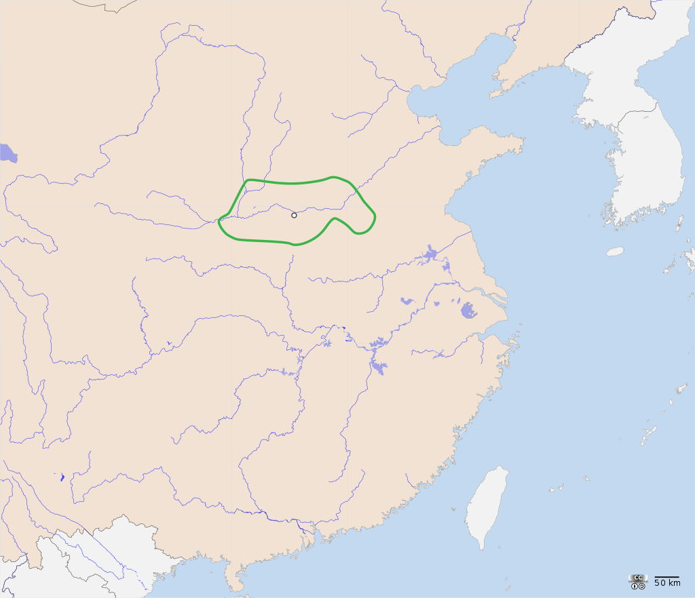
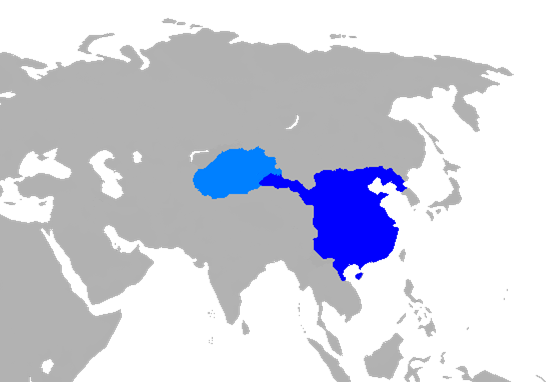

Egypt
3,200 ปีก่อนคริสตกาล
กำเนิดแห่งอาณาจักรอียิปต์โบราณ โดยราชาแมงป่อง (Scorpion king) ผู้ครองนครธีส (This) ซึ่งตั้งอยู่บริเวณตอนกลางแห่งลุ่มน้ำไนล์
3,100 ปีก่อนคริสตกาล
มีกษัตริย์ผู้นำของดินแดนอียิปต์บน นามว่า "เมเนส" (Menes) หรืออีกชื่อหนึ่งคือ &s "นาเมอร์" (Namer) ได้ทำสงครามกับอียิปต์ล่าง ซึ่งในท้ายที่สุดก็สามารถเอาชนะอียิปต์ล่างได้สำเร็จจนดินแดนอียิปต์ได้รวมกันเป็นปึกแผ่น
2,800 ปีก่อนคริสตกาล

กำเนิดกระดาษปาปิรัส เป็นกระดาษที่ทำมาจากต้นกก ที่มีความยืดหยุ่นและคงต่อสภาพอากาศอันแห้งแล้งของอียิปต์ได้ดี
2,600 ปีก่อนคริสตกาล

มหาพีระมิดแห่งกีซาถูกสร้างขึ้น เป็นหนึ่งเดียวในเจ็ดสิ่งมหัศจรรย์ของโลก ที่ยังคงเหลืออยู่ในปัจจุบัน
2,040 - 1,640 ปีก่อนคริสตกาล
เป็นยุคทองของอียิปต์ด้านเศรษฐกิจ สถาปัตยกรรม การสร้างคลองติดต่อไปถึงทะเลแดง การสร้างเขื่อนกั้นน้ำ
1,640-1,550 ปีก่อนคริสตกาล
ผู้ตั้งถิ่นฐานต่างชาติที่เรียกกันว่าชาวฮิกซอสยึดครองอียิปต์ล่างและจุดชนวนสงคราม พวกเขาริเริ่มนำม้าและรถศึกม้ามาใช้ในการศึก
1,086-30 ปีก่อนคริสตกาล

อวสานอียิปต์โบราณ ฟาโรห์และนักบวชแย่งชิงอำนาจควบคุมอียิปต์ในยุครอยต่อที่สามภายหลังราชอาณาจักรซึ่งอ่อนแอลง
China
2,737 ปีก่อนคริสตกาล
ชาเขียวได้ถูกค้นพบโดยจักรพรรดินามว่า เสินหนง ซึ่งเป็นบัณฑิตและนักสมุนไพร
2,100 – 1,600 ปีก่อนคริสตกาล
กำเนิดราชวงศ์เซี่ย มีกษัตริย์ปกครองทั้งหมด 17 พระองค์
1,600 – 1,028 ปีก่อนคริสตกาล
กำเนิดราชวงศ์ซาง มีกษัตริย์ปกครองทั้งสิ้น 30 พระองค์ ยุคนี้การทำเครื่องสัมฤทธิ์มีความเจริญรุ่งเรืองที่สุด
1,570 ปีก่อนคริสตกาล
ได้กำเนิด อารยธรรมจีน
500 ปีก่อนคริสตกาล
กำเนิดเหล็กหล่อ และธนูหน้าไม้
214 ปีก่อนคริสตกาล
สร้างกำแพงเมืองจีนสำเร็จ
206 ปีก่อนคริสตกาล
ก่อตั้งราชวงศ์ฮั่น
140 ปีก่อนคริสตกาล
ลัทธิขงจื๊อแผ่คลุมไปทั่วราชอาณาจักรจีน
Greek
2,000 ปีก่อนคริสตกาล

พวกอินโด-ยูโรเปียนกลุ่มหนึ่งที่อพยพมาจากทางตอนเหนือของประเทศกรีซ
1600 – 1100 ปีก่อนคริสตกาล
นครรัฐของพวกไมซีเนียนซึ่งยึดครองพื้นที่ส่วนใหญ่ และมีอำนาจสูงสุด
1100 ปีก่อนคริสตกาล
พวกกรีกอีกกลุ่ม(ดอเรียน) ได้สร้างนครรัฐสปาร์ตา
750 ปีก่อนคริสตกาล
กำเนิดอารยธรรมกรีก
371 ปีก่อนคริสตกาล
นครรัฐกรีกอื่นๆ ก็พยายามรวมตัวกันโดยมีนครรัฐธีบส์(Thebes) เป็นผู้นำ
338 ปีก่อนคริสตกาล
กรีกถูกกษัตริย์ฟิลิปแห่งมาซิโดเนียซึ่งอยู่ในเขตเอเชียไมเนอร์รุกรานและครอบครอง
336 – 323 ปีก่อนคริสตกาล
พระเจ้าอเล็กซานเดอร์มหาราชได้ปกครองจักรวรรดิมาซิโดเนียและได้ครอบครองแหล่งอารยธรรมต่างๆ ของโลก
Roman
1000 ปีก่อนคริสตกาล
พวกอินโด-ยูโรเปียนเผ่าละติน (Latin) ซึ่งอพยพจากทางตอนเหนือมาตั้งถิ่นฐานในแหลมอิตาลี
753 ปีก่อนคริสตกาล
กรุงโรมถูกก่อตั้งขึ้น โดยพี่น้องฝาแฝดชื่อ รอมิวรุสและรีมัส ซึ่งเป็นบุตรของเทพเจ้ามาร์ ซึ่งเป็นเทพเจ้าแห่งสงคราม
509 ปีก่อนคริสตกาล
กษัตริย์ทาควิน ผู้เย่อหยิ่งถูกขับออกจากเมืองทำให้โรมกลายเป็นสาธารณรัฐ
400 ปีก่อนคริสตกาล
เข้าควบคุมอิตาลีและเมดิเตอร์เรเนียน
309 – 209 ปีก่อนคริสตกาล

โรมันก็เริ่มพิชิตดินแดนอื่นๆ รวมทั้งสเปน
197 ปีก่อนคริสตกาล
โรมันพิชิตกอล ตุรกี ซีเรีย อียิปต์ อิสราเอล และจอร์แดน
100 ปีก่อนคริสตกาล

โรมันได้รวบรวมดินแดนโดยรอบทะเลเมดิเตอร์เรเนียนไว้ในอำนาจ จูเลียส ซีซาร์ เป็นมนุษย์คนแรกที่ถือกำเนิดโดยวิธีผ่าตัดหน้าท้อง
46 ก่อนคริสตกาล
จูเลียส ซีซาร์ ได้เข้าควบคุมกรุงโรม ได้รับการสถาปนาเป็นผู้เผด็จการ และมีอำนาจสูงสุดเทียบเท่ากษัตริย์
44 ปีก่อนคริสตกาล
จูเลียส ซีซาร์เสียชีวิตลงโดยฝีมือของพวกลอบสังหารออคเตเวียน